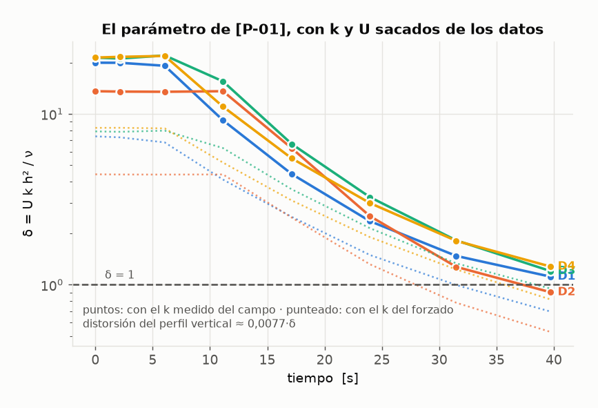
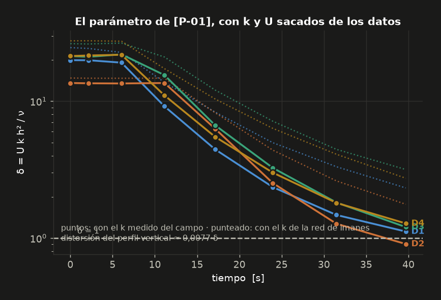
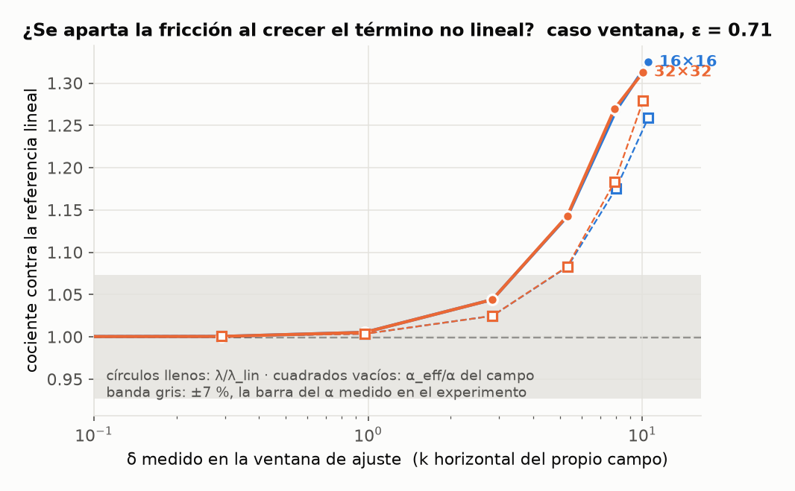
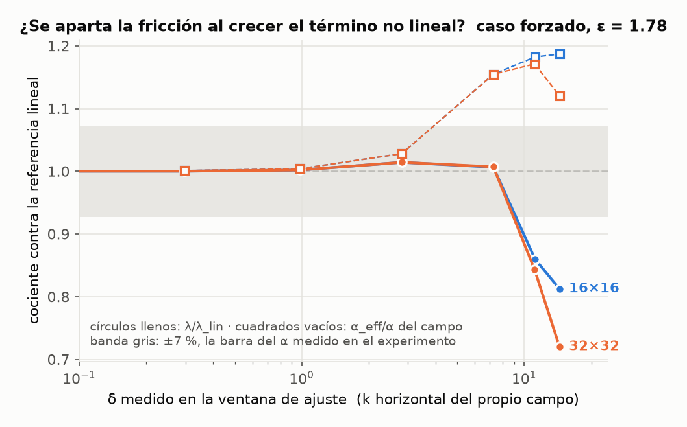
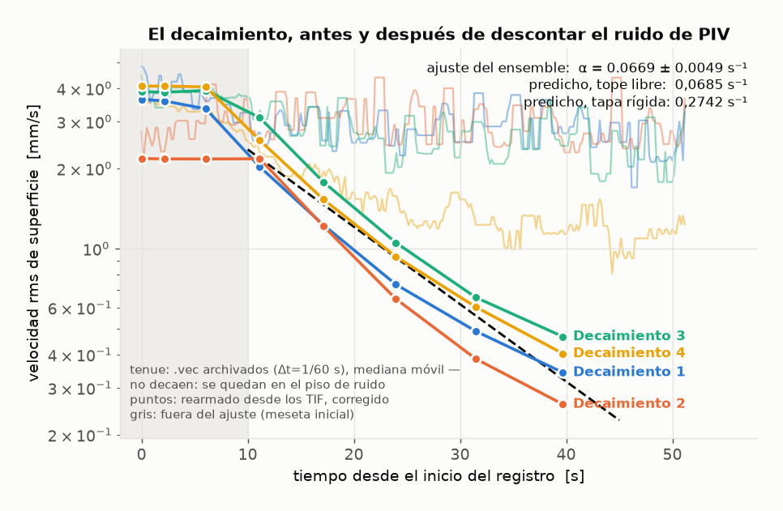
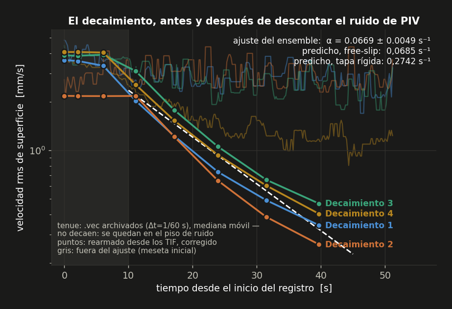
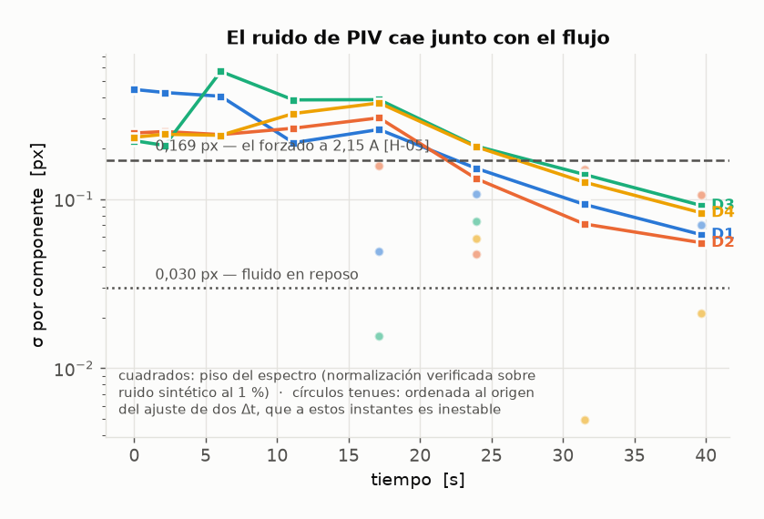
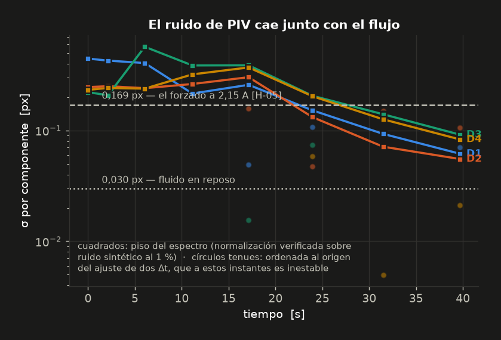
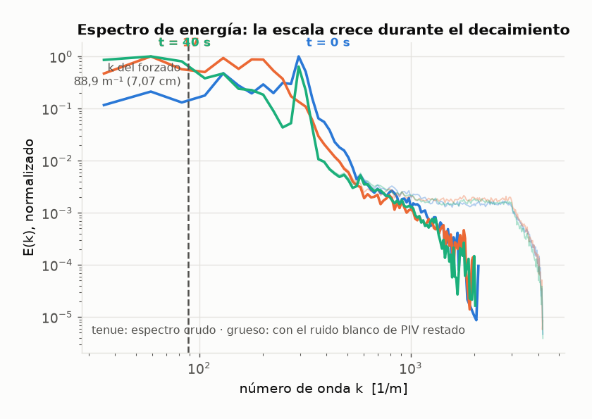
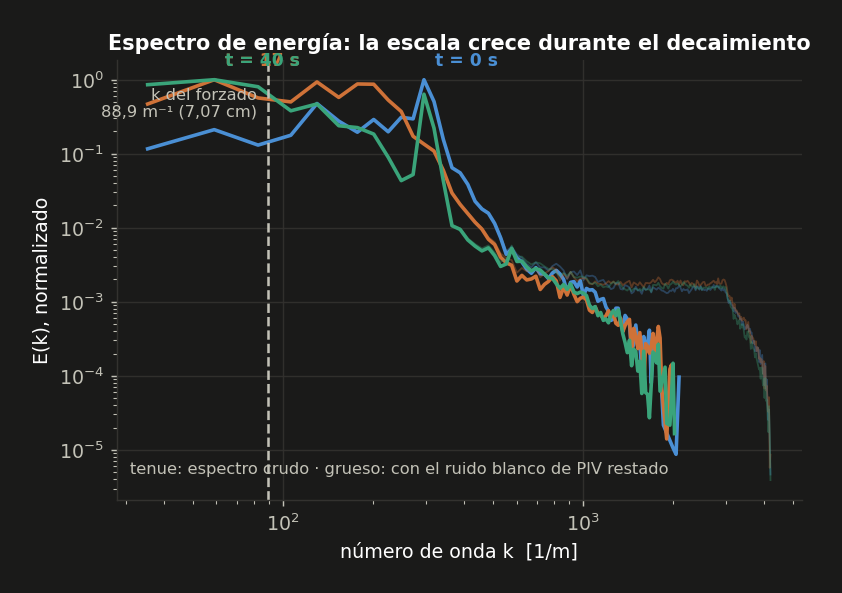

<title>Fricción con tope free-slip</title>
<link rel="stylesheet" href="https://fonts.googleapis.com/css2?family=Source+Serif+4:opsz,wght@8..60,400;8..60,600;8..60,700&family=IBM+Plex+Sans:wght@400;500;600&family=IBM+Plex+Mono:wght@400;600&display=swap">
<style>
:root {
  color-scheme: light;
  --ground:  #f6f7f8;
  --surface: #ffffff;
  --ink:     #12161a;
  --muted:   #5b6570;
  --rule:    #dde2e6;
  --accent:  #2a78d6;
  --accent-soft: #eaf1fb;
  --warn:    #b45309;
  --warn-soft: #fdf3e7;
  --ok: #1baf7a;
  --serie1:#2a78d6; --serie2:#eb6834; --serie3:#1baf7a; --serie4:#eda100;
}
@media (prefers-color-scheme: dark) {
  :root:not([data-theme="light"]) {
    color-scheme: dark;
    --ground:  #14171a;
    --surface: #1b1f23;
    --ink:     #eef1f4;
    --muted:   #a3adb7;
    --rule:    #2b3137;
    --accent:  #3987e5;
    --accent-soft: #17263a;
    --warn:    #d9922b;
    --warn-soft: #2a2013;
    --ok: #199e70;
    --serie1:#3987e5; --serie2:#d95926; --serie3:#199e70; --serie4:#c98500;
  }
}
:root[data-theme="dark"] {
  color-scheme: dark;
  --ground:  #14171a;
  --surface: #1b1f23;
  --ink:     #eef1f4;
  --muted:   #a3adb7;
  --rule:    #2b3137;
  --accent:  #3987e5;
  --accent-soft: #17263a;
  --warn:    #d9922b;
  --warn-soft: #2a2013;
  --ok: #199e70;
  --serie1:#3987e5; --serie2:#d95926; --serie3:#199e70; --serie4:#c98500;
}

body { background: var(--ground); color: var(--ink);
       font-family: "Source Serif 4", Georgia, serif; font-size: 17px;
       line-height: 1.62; margin: 0; }
.hoja { max-width: 62rem; margin: 0 auto; padding: 3.2rem 1.5rem 6rem;
        display: flex; flex-direction: column; gap: 1.1rem; }
.hoja > * { margin: 0; }

.eyebrow { font-family: "IBM Plex Sans", system-ui, sans-serif; font-size: .74rem;
           letter-spacing: .13em; text-transform: uppercase; color: var(--muted); }
h1 { font-size: clamp(1.9rem, 4.4vw, 2.6rem); line-height: 1.16; font-weight: 600;
     text-wrap: balance; letter-spacing: -.015em; }
h2 { font-family: "IBM Plex Sans", system-ui, sans-serif; font-size: 1.2rem;
     font-weight: 600; margin-top: 2.6rem; text-wrap: balance;
     padding-bottom: .45rem; border-bottom: 1px solid var(--rule);
     scroll-margin-top: 1.2rem; display: flex; align-items: baseline; gap: .6rem; }
h2 .n { font-family: "IBM Plex Mono", monospace; font-size: .82rem; color: var(--muted);
        font-weight: 400; }
h3 { font-family: "IBM Plex Sans", system-ui, sans-serif; font-size: .98rem;
     font-weight: 600; margin-top: 1.3rem; }
p, li { max-width: 42rem; }
.hoja > p, .hoja > ul, .hoja > ol { color: var(--ink); }
a { color: var(--accent); }
code, .num td, .num th { font-family: "IBM Plex Mono", ui-monospace, monospace; }
code { font-size: .88em; background: var(--accent-soft); padding: .08em .32em;
       border-radius: 3px; }
b, strong { font-weight: 600; }
.nota { color: var(--muted); font-size: .93rem; }

.veredicto { background: var(--surface); border: 1px solid var(--rule);
             border-left: 3px solid var(--accent);
             padding: 1.3rem 1.5rem; display: flex; flex-direction: column;
             gap: .9rem; }
.cifras { display: grid; grid-template-columns: repeat(auto-fit, minmax(11rem, 1fr));
          gap: 1.4rem 2rem; }
.cifra { display: flex; flex-direction: column; gap: .15rem; }
.cifra .v { font-family: "IBM Plex Mono", monospace; font-size: 1.4rem;
            font-weight: 600; font-variant-numeric: tabular-nums; }
.cifra .k { font-family: "IBM Plex Sans", sans-serif; font-size: .76rem;
            letter-spacing: .04em; text-transform: uppercase; color: var(--muted); }
.cifra.destacada .v { color: var(--accent); }

nav.indice { background: var(--surface); border: 1px solid var(--rule);
             padding: 1rem 1.3rem; font-family: "IBM Plex Sans", sans-serif;
             font-size: .88rem; }
nav.indice p { font-size: .74rem; letter-spacing: .07em; text-transform: uppercase;
               color: var(--muted); margin: 0 0 .6rem; max-width: none; }
nav.indice ol { margin: 0; padding-left: 1.2rem; columns: 2; column-gap: 2rem; }
nav.indice li { margin-bottom: .35rem; break-inside: avoid; }
nav.indice a { text-decoration: none; color: var(--ink); }
nav.indice a:hover { color: var(--accent); }
@media (max-width: 32rem) { nav.indice ol { columns: 1; } }

figure { background: var(--surface); border: 1px solid var(--rule);
         padding: 1rem 1rem .35rem; display: flex; flex-direction: column;
         gap: .55rem; margin: .3rem 0; }
figure img { display: block; width: 100%; height: auto; max-width: 100%; }
figcaption { font-family: "IBM Plex Sans", sans-serif; font-size: .85rem;
             color: var(--muted); line-height: 1.5; padding-bottom: .6rem;
             max-width: 46rem; }
figcaption b { color: var(--ink); }
img.oscura { display: none; }
@media (prefers-color-scheme: dark) {
  :root:not([data-theme="light"]) img.clara { display: none; }
  :root:not([data-theme="light"]) img.oscura { display: block; }
}
:root[data-theme="dark"] img.clara { display: none; }
:root[data-theme="dark"] img.oscura { display: block; }

.scroll { overflow-x: auto; border: 1px solid var(--rule); background: var(--surface); }
table { border-collapse: collapse; width: 100%; font-size: .86rem; }
th, td { padding: .45rem .75rem; text-align: right; white-space: nowrap;
         border-bottom: 1px solid var(--rule); }
th:first-child, td:first-child { text-align: left; white-space: normal; }
thead th { font-family: "IBM Plex Sans", sans-serif; font-weight: 600;
           font-size: .74rem; letter-spacing: .04em; text-transform: uppercase;
           color: var(--muted); }
tbody tr:last-child td { border-bottom: none; }
.num td { font-variant-numeric: tabular-nums; }
tr.hecha td:first-child::before { content: "● "; color: var(--ok); }
tr.curso td:first-child::before { content: "◐ "; color: var(--accent); }

.grid2 { display: grid; grid-template-columns: repeat(auto-fit, minmax(15rem, 1fr));
         gap: 1rem; }
.tarjeta { background: var(--surface); border: 1px solid var(--rule);
           padding: 1rem 1.2rem; font-family: "IBM Plex Sans", sans-serif;
           font-size: .86rem; }
.tarjeta h4 { margin: 0 0 .3rem; font-size: .74rem; letter-spacing: .05em;
              text-transform: uppercase; color: var(--muted); font-weight: 600; }
.tarjeta .val { font-family: "IBM Plex Mono", monospace; font-size: 1.05rem;
                color: var(--ink); }
.tarjeta p { font-family: "Source Serif 4", serif; font-size: .95rem; margin-top: .3rem; }

.salvedad { background: var(--warn-soft); border: 1px solid var(--rule);
            border-left: 3px solid var(--warn); padding: .9rem 1.2rem;
            font-size: .93rem; }
.salvedad b { color: var(--warn); }
ul.pendientes li, ul.salvedades li { margin-bottom: .6rem; }

.etiqueta { font-family: "IBM Plex Mono", monospace; font-size: .78rem;
            color: var(--muted); }

.pie { color: var(--muted); font-size: .85rem;
       font-family: "IBM Plex Sans", sans-serif; border-top: 1px solid var(--rule);
       padding-top: 1rem; margin-top: 2.4rem; max-width: none; }
.pie a { color: var(--muted); }
</style>

<main class="hoja">

<p class="eyebrow">Ondas Gravitacionales e Investigación Asistida por IA · Entrega parcial · 2026-09-16</p>
<h1>¿Cuánto frena una capa delgada de fluido el fondo sobre el que fluye?</h1>
<p class="nota">Resumen condensado de lo que está <b>terminado y verificado</b> hasta hoy.
Sólo se reportan versiones finales: dónde una cifra cambió de método a lo largo del
trabajo, se muestra únicamente la última. El detalle completo —con cada decisión, su
alternativa descartada y por qué— vive en <code>DECISIONES.md</code> del repositorio;
esta página es su resumen para leer de corrido.</p>

<div class="veredicto">
  <div class="cifras">
    <div class="cifra destacada"><span class="v">0,0669 ± 0,0049</span>
      <span class="k">α medido, PIV (s⁻¹)</span></div>
    <div class="cifra"><span class="v">0,0685</span>
      <span class="k">α predicho · free-slip (s⁻¹)</span></div>
    <div class="cifra"><span class="v">0,2742</span>
      <span class="k">α predicho · tapa rígida (s⁻¹)</span></div>
    <div class="cifra"><span class="v">2,4 %</span>
      <span class="k">diferencia vs. free-slip</span></div>
  </div>
  <p style="max-width:46rem">El decaimiento de la celda de forzado electromagnético,
  medido por PIV el 02-06-25, es compatible con la predicción de <b>fondo no-deslizante
  y tope free-slip</b> dentro de un 2,4&nbsp;%, y queda <b>4,1 veces por debajo</b> de
  lo que predeciría una tapa rígida (el supuesto que usan hoy los códigos del grupo). Es
  la comparación que motiva todo el proyecto: la fricción de fondo se puede
  <b>calcular</b> a partir de la condición de contorno real, en vez de ajustarla.</p>
  <p class="salvedad" style="max-width:46rem"><b>Salvedad abierta (2026-09-16, [P-02]).</b>
  α pelado es la tasa de un modo con k&nbsp;→&nbsp;0; la de u_rms es
  α&nbsp;+&nbsp;ν⟨k²⟩, siempre mayor. Con el k que tiene el flujo en la ventana del
  ajuste (pico en 59–130&nbsp;m⁻¹) la predicción es 0,072–0,085&nbsp;s⁻¹ y el medido
  queda un 7–22&nbsp;% <b>por debajo</b>. El 2,4&nbsp;% es contra el único valor que el
  flujo no puede tener. El barrido en δ con SPECTER (§4.1) descartó que la no linealidad
  lo explique —empuja para el otro lado—; lo que queda es robusto en lo cualitativo
  (free-slip, no tapa rígida: factor 4) y abierto en lo cuantitativo.</p>
</div>

<nav class="indice">
  <p>En esta página</p>
  <ol>
    <li><a href="#pregunta">1 · La pregunta y por qué importa</a></li>
    <li><a href="#fases">2 · Estado de las fases</a></li>
    <li><a href="#establecido">3 · Lo ya establecido (SPECTER)</a></li>
    <li><a href="#p01">4 · Validez de la reducción 2D</a></li>
    <li><a href="#decaimiento">5 · El decaimiento medido</a></li>
    <li><a href="#instrumento">6 · El capítulo de instrumento</a></li>
    <li><a href="#campana">7 · Parámetros de la campaña</a></li>
    <li><a href="#salvedades">8 · Salvedades vigentes</a></li>
    <li><a href="#sigue">9 · Qué sigue</a></li>
  </ol>
</nav>

<h2 id="pregunta"><span class="n">1</span>La pregunta y por qué importa</h2>
<p>En las simulaciones de turbulencia cuasi-2D que usa el grupo, el decaimiento de una
capa delgada de fluido está dominado por la fricción con el fondo. Esa fricción nace de
la <b>asimetría</b> entre el fondo, no-deslizante, y la superficie de arriba, que en el
experimento real es libre (el electrolito está en contacto con aire). Los códigos
existentes o no tienen bordes verticales, o los tienen no-deslizantes de los dos lados —
así que la fricción entra como un parámetro <b>ajustado</b>, no calculado.</p>
<p>Este proyecto implementa en <b>SPECTER</b> (el solver espectral del grupo) la
condición <b>free-slip</b> —plana y sin tensión tangencial, la aproximación de esa
superficie libre válida cuando su deformación es despreciable (sección&nbsp;8)— para
calcular esa fricción desde primeros principios, y contrasta el resultado contra el
decaimiento medido por PIV en la celda de forzado electromagnético.</p>
<p class="nota">Free-slip y "superficie libre" no son lo mismo: free-slip vs.
no-deslizante es sobre la tensión tangencial en un borde <i>fijo</i>; superficie libre
(deformable) vs. tapa rígida es sobre si ese borde se <i>mueve</i>. Lo implementado es
free-slip y además plano —dos aproximaciones apiladas—, y así lo nombra el propio código
(<code>freeslip</code>, <code>freeslip_z</code>).</p>

<h2 id="fases"><span class="n">2</span>Estado de las fases</h2>
<div class="scroll">
<table class="num">
<thead><tr><th>fase</th><th>qué es</th><th>estado</th></tr></thead>
<tbody>
<tr class="hecha"><td>0 · SPECTER</td><td>Conseguir el solver y leer cómo impone las condiciones de contorno</td><td>hecha</td></tr>
<tr class="hecha"><td>1 · Teoría</td><td>Derivación analítica y solver de referencia no espectral</td><td>hecha</td></tr>
<tr class="hecha"><td>2 · Implementación</td><td>Tope libre de tensiones en Fortran, dentro de SPECTER</td><td>hecha</td></tr>
<tr class="hecha"><td>3 · Verificación</td><td>Seis casos de aceptación, incluido uno que falla a propósito</td><td>hecha — puerta 6/6</td></tr>
<tr class="curso"><td>4 · Física y entrega</td><td>Validez de la reducción 2D (hecha, cuantificada con el barrido en δ), decaimiento medido (hecho), corrida de producción, informe</td><td>en curso</td></tr>
</tbody>
</table>
</div>

<h2 id="establecido"><span class="n">3</span>Lo ya establecido, verificado numéricamente</h2>
<p>Con fondo no-deslizante y tope free-slip el espectro de decaimiento vertical
es λₘ = ν((m+½)π/h)², contra λₙ = ν(nπ/h)² con no-deslizamiento en las dos caras. El
modo fundamental de cada uno da la fricción de fondo:</p>
<div class="grid2">
  <div class="tarjeta"><h4>Fricción · free-slip</h4>
    <div class="val">α = νπ² / (4h²)</div></div>
  <div class="tarjeta"><h4>Fricción · canal (no-slip/no-slip)</h4>
    <div class="val">α = νπ² / h²</div></div>
  <div class="tarjeta"><h4>Cociente entre ambas</h4>
    <div class="val">exactamente 4</div>
    <p>Verificado por tres rutas independientes.</p></div>
  <div class="tarjeta"><h4>Sesgo del PIV de superficie</h4>
    <div class="val">u(h) / ⟨u⟩ = π/2</div>
    <p>Las partículas trazadoras flotan: miden la velocidad de superficie, un 57&nbsp;%
    por encima del promedio vertical del modo fundamental.</p></div>
</div>
<p style="margin-top:1rem">SPECTER modificado reproduce estos números contra una
referencia analítica independiente, en una malla 8×8×128 (ν = 10⁻², Lz = 1):</p>
<div class="scroll">
<table class="num">
<thead><tr><th>cantidad</th><th>SPECTER</th><th>referencia</th><th>error relativo</th></tr></thead>
<tbody>
<tr><td>λ₀ (m=0, el fundamental)</td><td>2,467401099·10⁻²</td><td>2,467401100·10⁻²</td><td>6,8·10⁻¹⁰</td></tr>
<tr><td>λ₁ (m=1, primer armónico vertical)</td><td>2,220660867·10⁻¹</td><td>2,220660990·10⁻¹</td><td>5,5·10⁻⁸</td></tr>
<tr><td>λ₂ (m=2, segundo armónico vertical)</td><td>6,168500038·10⁻¹</td><td>6,168502750·10⁻¹</td><td>4,4·10⁻⁷</td></tr>
<tr><td>λ(canal) / λ(free-slip)</td><td>4,000000015</td><td>4</td><td>3,8·10⁻⁹</td></tr>
<tr><td>residuo de tensión en la cara free-slip</td><td colspan="2">6,1·10⁻¹² relativo a la cara rígida, independiente de dt</td><td>—</td></tr>
</tbody>
</table>
</div>
<p class="nota">El último renglón es la parte falsable de la implementación: la
condición se impone sobre la vorticidad tangencial, y la proyección de presión la
conserva sin error de partición.</p>

<h2 id="p01"><span class="n">4</span>¿Sigue valiendo reducir el problema a 2D?</h2>
<p>La reducción a un problema bidimensional promedia la ecuación de Navier–Stokes en la
vertical. Promediada sobre la capa, sin ninguna clausura, aparece un parámetro
adimensional que gobierna cuánto se aparta el flujo real del modo fundamental que da la
fórmula de α de arriba:</p>
<div class="tarjeta" style="max-width:28rem">
  <h4>Parámetro que gobierna la clausura</h4>
  <div class="val">δ = U·k·h² / ν = Re_h · ε</div>
  <p>con ε = k·h el espesor relativo a la escala horizontal del flujo.</p>
</div>
<div class="scroll" style="margin-top:1rem">
<table class="num">
<thead><tr><th>régimen</th><th>δ</th><th>distorsión del perfil</th></tr></thead>
<tbody>
<tr><td>forzado (2,15 A, ⟨u⟩ = 0,84 mm/s)</td><td>8,97</td><td>≈ 7 %</td></tr>
<tr><td>inicio del decaimiento (⟨u⟩ = 2,55 mm/s)</td><td>27,2</td><td>≈ 21 %</td></tr>
</tbody>
</table>
</div>
<figure>
  
  
  <figcaption><b>δ medido a lo largo de los cuatro decaimientos.</b> Con el k pesado por
  energía del campo (puntos) δ arranca por encima de 20 y cruza δ&nbsp;=&nbsp;1 recién
  cerca del final del registro; con el k fundamental de la red de imanes fijo (punteado)
  queda más arriba, porque la escala del flujo crece durante el decaimiento. La
  distorsión del perfil vertical, que es lo que realmente hay que acotar, es de ~20&nbsp;%
  al inicio y de pocos por ciento dentro de la ventana del ajuste (t&nbsp;&gt;&nbsp;10&nbsp;s).</figcaption>
</figure>
<p><b>Conclusión:</b> escribiendo δ a partir de la geometría real de los imanes
(1,5&nbsp;cm entre centros, k&nbsp;=&nbsp;296&nbsp;m⁻¹, que es donde pica el espectro
medido del estado forzado), resulta grande: ≈&nbsp;9 en el forzado y ≈&nbsp;27 al inicio
del decaimiento. Pero δ no es la cantidad que tiene que ser chica: la que sí importa es
la distorsión del perfil vertical, que tiene un prefactor pequeño (≈&nbsp;0,0077).
<b>La clausura de un modo es mala en la meseta forzada y en los primeros segundos del
decaimiento (distorsión ≈&nbsp;20&nbsp;%), y buena dentro de la ventana donde se ajusta
α</b>, cuando la energía ya migró a k&nbsp;≲&nbsp;130&nbsp;m⁻¹ y U cayó — es la respuesta
a la pregunta que abre esta sección, y el barrido en δ con SPECTER la pone a prueba.</p>

<h3 id="barrido">4.1 · Lo que dice el barrido en δ con SPECTER</h3>
<p>Con SPECTER ya modificado se integró el decaimiento libre de un campo celular
tridimensional (dos modos horizontales por el perfil vertical fundamental) a amplitud
creciente, en dos regímenes de ε&nbsp;=&nbsp;kh que reproducen el experimento —
ε&nbsp;=&nbsp;0,71 para la ventana del ajuste y ε&nbsp;=&nbsp;1,78 para la meseta forzada
— y a dos resoluciones horizontales, 16×16 y 32×32, con la referencia lineal medida con el
mismo binario a amplitud minúscula. Dos medidas independientes: la tasa de decaimiento de
⟨v²⟩ contra la lineal, y la fricción de fondo <b>sin clausura</b>,
α_eff&nbsp;=&nbsp;ν⟨∂_z u|₀·Ū⟩/(h⟨Ū²⟩), leída del campo en la ventana de ajuste y
dividida por νπ²/4h².</p>
<div class="scroll">
<table class="num">
<thead><tr><th>δ en la ventana</th><th>ε = 0,71 · λ/λ_lin</th><th>ε = 0,71 · α_eff/α</th><th>ε = 1,78 · λ/λ_lin</th><th>ε = 1,78 · α_eff/α</th></tr></thead>
<tbody>
<tr><td>0,3</td><td>1,000</td><td>1,001</td><td>1,000</td><td>1,001</td></tr>
<tr><td>1</td><td>1,005</td><td>1,004</td><td>1,002</td><td>1,004</td></tr>
<tr><td>3</td><td>1,044</td><td>1,025</td><td>1,014</td><td>1,028</td></tr>
<tr><td>5 – 7</td><td>1,143</td><td>1,083</td><td>1,007</td><td>1,155</td></tr>
<tr><td>8 – 10</td><td>1,27 – 1,31</td><td>1,18 – 1,28</td><td colspan="2">no convergido entre mallas</td></tr>
</tbody>
</table>
</div>
<figure>
  
  <figcaption><b>Caso ventana, ε&nbsp;=&nbsp;0,71.</b> Círculos: tasa medida sobre la
  lineal; cuadrados: α_eff/α del campo. Las dos mallas coinciden dentro de 1,2&nbsp;%
  hasta δ&nbsp;=&nbsp;10. La banda gris es la barra del α medido en el experimento.</figcaption>
</figure>
<figure>
  
  <figcaption><b>Caso forzado, ε&nbsp;=&nbsp;1,78.</b> Hasta δ&nbsp;≈&nbsp;7 las mallas
  coinciden; la fricción de fondo sube un 15&nbsp;% mientras la tasa total queda dentro
  de 1,4&nbsp;% de la lineal, porque el término no lineal manda energía a escalas más
  grandes, que disipan menos horizontalmente. Los dos puntos de más amplitud no convergen
  entre mallas y no se usan.</figcaption>
</figure>
<p><b>Conclusión:</b> el término no lineal <b>sube la fricción de fondo</b>: 2,5&nbsp;% en
δ&nbsp;=&nbsp;3, 8&nbsp;% en δ&nbsp;=&nbsp;5, 15–18&nbsp;% en δ&nbsp;≈&nbsp;7–8, hasta
26–28&nbsp;% en δ&nbsp;=&nbsp;10 — un factor ~3 por encima de la estimación de orden de
la sección anterior. En la ventana donde se ajusta α el experimento va de δ&nbsp;≈&nbsp;10
a δ&nbsp;≈&nbsp;1,3, así que la corrección es del 10–30&nbsp;% en la primera mitad y
despreciable en la segunda. La clausura de un modo queda <b>cuantificada, no
estimada</b>: vale al por ciento para δ&nbsp;≲&nbsp;3 y hay que corregirla por encima.
Lo que no se probó: un campo de banda ancha como condición inicial, y la meseta como
estado forzado en vez de decaimiento libre. Detalle y veredicto automático en
<code>informe/barrido_delta_etapa1_{ventana,forzado}.pdf</code>; entradas [D-42] y [V-16].</p>

<h2 id="decaimiento"><span class="n">5</span>El decaimiento medido</h2>
<p>Los cuatro registros de decaimiento de la campaña (<code>med_S0003</code>,
<code>S0005</code>, <code>S0006</code>, <code>S0009</code>) forman un <b>ensemble</b>:
las barras de error de la comparación salen de ahí, no de una sola curva. El ajuste se
restringe a t&nbsp;&gt;&nbsp;10&nbsp;s, después de la meseta inicial que corresponde al
estado forzado previo al corte.</p>
<figure>
  
  
  <figcaption><b>El decaimiento, antes y después de descontar el ruido de PIV.</b> Las
  series <code>.vec</code> archivadas (trazo tenue) usan pares de cuadros consecutivos,
  el peor Δt posible en este régimen: el ruido es del orden de la señal y la velocidad
  aparente no decae. Reprocesando desde los TIF crudos con Δt óptimo y multipaso propio
  (puntos y trazo grueso) el decaimiento exponencial aparece con claridad, con 97,5&nbsp;%
  de vectores válidos contra 30–36&nbsp;% de las series archivadas.</figcaption>
</figure>
<div class="scroll">
<table class="num">
<thead><tr><th></th><th>α [s⁻¹]</th><th>τ = 1/α [s]</th></tr></thead>
<tbody>
<tr><td><b>ensemble de los 4, t &gt; 10 s</b></td><td><b>0,06687 ± 0,00488</b></td><td><b>15,0</b></td></tr>
<tr><td>predicho, free-slip</td><td>0,06854</td><td>14,6</td></tr>
<tr><td>predicho, tapa rígida</td><td>0,27416</td><td>3,6</td></tr>
</tbody>
</table>
</div>
<p class="nota">Limitado por el espesor de la capa, no por la estadística: medio
milímetro de error en h mueve α un 17&nbsp;%.</p>

<h2 id="instrumento"><span class="n">6</span>El capítulo de instrumento: parámetros óptimos de PIV</h2>
<p>Este fue el punto de partida del proyecto: usando agentes para explorar
sistemáticamente la campaña —rearmando pares de cuadros a distintos Δt y comparando
esquemas de multipaso sobre las mismas imágenes— se identificó la separación entre
cuadros y el tamaño de ventana de interrogación que dan el mejor compromiso entre señal
y ruido para este flujo, con un multipaso propio que sube los vectores válidos del
30–36&nbsp;% de las series archivadas al 97,5&nbsp;%. Ese trabajo hoy hace de barra de
error de la comparación de arriba, descompuesta en tres mediciones de σ sobre la misma
cámara y la misma configuración de PIV, que se diferencian sólo en qué degradación
física incluyen:</p>
<div class="scroll">
<table class="num">
<thead><tr><th>medición</th><th>σ por componente</th><th>qué agrega</th></tr></thead>
<tbody>
<tr><td>par sintético, corrimiento conocido</td><td>≤ 0,011 px</td><td>correlación y estimador subpíxel solos</td></tr>
<tr><td>fluido en reposo, par real</td><td>0,030 px</td><td>ruido de lectura, iluminación, movimiento propio</td></tr>
<tr><td>forzado 2,15 A, ajuste del barrido</td><td>0,169 px</td><td>gradiente de velocidad en la ventana, movimiento fuera del plano</td></tr>
</tbody>
</table>
</div>
<figure>
  
  
  <figcaption><b>El ruido de PIV no es una constante del instrumento: cae junto con el
  flujo.</b> El término que agrega el flujo es el 98&nbsp;% de la varianza de σ. En un
  decaimiento, donde U cae un factor ~10, σ tampoco es constante a lo largo del
  registro.</figcaption>
</figure>
<figure>
  
  
  <figcaption><b>El estado forzado pica en el fundamental de la red de imanes.</b> Los
  doce espectros de la meseta forzada tienen su pico en 295&nbsp;m⁻¹ (λ&nbsp;≈&nbsp;2,1&nbsp;cm),
  y la red con el paso correcto de 1,5&nbsp;cm da 296 ([H-16]; la línea punteada). Durante
  el decaimiento la escala crece: el número de onda pesado por energía va de 240&nbsp;m⁻¹
  al inicio a 135&nbsp;m⁻¹ al final. Es el k que hay que usar para evaluar δ en cada
  instante.</figcaption>
</figure>
<p class="salvedad"><b>Pendiente</b>: el barrido en Δt que da σ&nbsp;=&nbsp;0,169&nbsp;px
supone un registro estacionario. El próximo paso de este capítulo es repetir esa
medición sobre <code>med_S0002</code>, la corrida forzada que sí lo es, para dejar
cerrado este número — es la barra de error de todo el trabajo.</p>

<h2 id="campana"><span class="n">7</span>Parámetros de la campaña</h2>
<p>Viven en un único lugar del código, <code>codigo/celda.py</code>, porque cambian
entre experiencias — nunca se escriben sueltos dentro de una cuenta.</p>
<div class="grid2">
  <div class="tarjeta"><h4>Cámara</h4><div class="val">Photron FASTCAM-1024PCI</div>
    <p>1024×1024, 10 bits, 60 fps, obturador 1/60 s</p></div>
  <div class="tarjeta"><h4>Escala</h4><div class="val">3800 px/m</div>
    <p>0,263 mm/px · campo de 26,9 cm</p></div>
  <div class="tarjeta"><h4>Capa de electrolito</h4><div class="val">h = 6 mm</div>
    <p>KNO₃ al 16&nbsp;% m/m, partículas trazadoras de 100 µm</p></div>
  <div class="tarjeta"><h4>Imanes</h4><div class="val">Ø 1 cm, 1,5 cm entre centros</div>
    <p>Red tipo tablero, 5 mm de vacío entre imanes, acrílico de 6 mm hasta la capa;
    armónico dominante diagonal, λ = 2,12 cm (k = 296 m⁻¹), medido en 295</p></div>
  <div class="tarjeta"><h4>Corridas</h4><div class="val">3 forzados · 4 decaimientos · 3 quenchings</div>
    <p>3072 cuadros por corrida = 51,2 s</p></div>
  <div class="tarjeta"><h4>Viscosidad usada</h4><div class="val">ν = 10⁻⁶ m²/s</div>
    <p>La del agua, no la del electrolito real — ver salvedades.</p></div>
</div>

<h2 id="salvedades"><span class="n">8</span>Salvedades vigentes</h2>
<p>Limitaciones reales del resultado, no errores a corregir en este resumen — declaradas
porque el proyecto no afirma más de lo que se chequeó.</p>
<ul class="salvedades">
  <li><b>La viscosidad usada es la del agua, no la del electrolito.</b> Es una decisión
  explícita, no verificada contra el KNO₃ al 16&nbsp;% real. Entra a primer orden en α,
  que va como ν/h².</li>
  <li><b>La superficie libre real puede no ser free-slip ideal.</b> Un
  electrolito con partículas flotando puede desarrollar una película superficial que la
  vuelva casi rígida — el caso no-deslizante, con α cuatro veces mayor. Es la salvedad
  más fuerte del trabajo.</li>
  <li><b>El espesor domina el error.</b> Medio milímetro sobre h&nbsp;=&nbsp;6&nbsp;mm
  mueve α un 17&nbsp;%; la estadística del ensemble no es el límite.</li>
  <li><b>El marco espectral de Foucaut et&nbsp;al. no describe del todo el ruido de este
  multipaso</b>: el piso del espectro no muestra el cero que exigiría la ventana de
  16&nbsp;px, como si el ruido estuviera correlacionado sobre el paso de la grilla.</li>
  <li><b>La comparación cuantitativa con α está abierta ([P-02]).</b> La tasa de u_rms es
  α&nbsp;+&nbsp;ν⟨k²⟩ más la corrección no lineal de §4.1, ambas positivas; el α medido
  queda por debajo de esa predicción. Candidatos que quedan: el contenido en k del campo
  medido (el piso de ruido no es blanco), el espesor, y que el PIV ajusta la velocidad de
  <i>superficie</i> u(h) y no el promedio vertical — con perfil distorsionado
  u(h)/⟨u⟩ no es π/2 ni constante en el tiempo. Ese último es medible con el mismo
  barrido y es el siguiente paso.</li>
</ul>

<h2 id="sigue"><span class="n">9</span>Qué sigue</h2>
<p>La herramienta ya existe — SPECTER puede calcular α en vez de ajustarlo. Falta usarla
en producción y cerrar el capítulo de instrumento:</p>
<ol class="pendientes">
  <li><b>Medir la pendiente de u(h) contra la de ⟨u⟩ en el barrido en δ</b>, escribiendo
  dos campos en la ventana en vez de uno: es lo que el PIV ajusta, y el candidato que
  queda para [P-02]. Y una malla más fina para los dos puntos de más amplitud del caso
  forzado, que no convergieron.</li>
  <li><b>Corrida de producción en el clúster</b> con la geometría real de la celda, y de
  ahí el α calculado. La resolución sale del barrido: 32×32 alcanza hasta δ&nbsp;≈&nbsp;7
  en ε&nbsp;=&nbsp;1,78 y hasta δ&nbsp;≈&nbsp;10 en ε&nbsp;=&nbsp;0,71.</li>
  <li><b>Cerrar el capítulo de instrumento</b> repitiendo la medición de σ sobre
  <code>med_S0002</code>, la corrida forzada estacionaria.</li>
  <li><b>La entrega final</b>: repositorio público reproducible, página HTML y PDF.</li>
</ol>

<p class="pie">Generado a partir de <code>ESTADO.md</code>, <code>DECISIONES.md</code> y
los JSON de <code>salidas/tablas/</code> del repositorio del proyecto. Esta página es la
lectura para humanos; el registro completo de decisiones, hallazgos y verificaciones
—pensado para retomarse con o sin la conversación que lo produjo— vive en
<code>CLAUDE.md</code>, <code>ESTADO.md</code> y <code>DECISIONES.md</code> en la raíz
del repositorio.</p>

</main>
